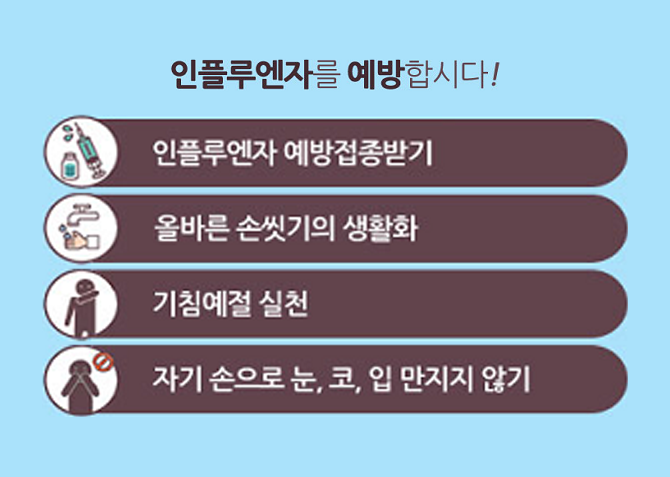

예방과 치료
예방과 치료
플루을 예방하는 가장 기본적인 방법은 일상 생활에서의 개인 위생관리입니다.
플루 예방 접종은 인플루엔자로 인한 입원과 사망을 줄이고 질병부담을 감소시키는 매우 효과적인 방법입니다. 2)
| 대상 및 변수 | |
|---|---|
| 일반인 |
|
| 소아 |
|
| 노인 |
|
| 장기요양원수용자 |
|
예방 접종이 최선이지만, 예방 접종을 했더라도 플루에 걸릴 수 있습니다. 플루 증상이 나타날 때는, 즉시 병원에 방문하여 보다 빠르고 정확한 진단을 받는 것이 중요합니다.
후두 도말물, 비인두 세척물 또는 객담 등을 채취하여 바이러스 배양 또는 유전자 증폭 검사로 플루를 확진할 수 있습니다. 검사 결과를 확인하는 데 하루 이상 소요되기 때문에 진료 현장에서 즉시 결과를 확인할 수 없습니다.
신속항원검사는 인후 도말 검체를 이용하여 10-15분 이내에 결과를 확인할 수 있어 편리합니다. 최근 새로운 진단 시약들이 개발되어 신속하고 편리하게 활용되고 있으며, 배양 또는 유전자 검사에 비하여 민감도가 낮지만 진료실에서 빠르게 진단함으로써 치료방법을 신속히 결정할 수 있습니다.
플루의 치료는 항바이러스제 요법과 기타 대증 요법으로 나눌 수 있습니다. 특히 노인, 영유아 및 만성 내과 질환 환자에서의 플루는 폐렴 등 중증 합병증 발생, 입원 및 사망의 위험이 증가하기 때문에 조기 항바이러스제 치료가 매우 중요합니다. 3)
| 항바이러스제 |
|
|---|---|
| 항생제 |
|
| 감기약(일반약) |
|
항바이러스제는 플루 바이러스에 직접적으로 작용하여 우리 몸이 플루로부터 회복될 수 있게 도와줍니다. 플루 바이러스에 감염이 되고 나면, 바이러스 입자는 우리 몸안에서 복제되고 퍼지기 시작하는데, 항바이러스제는 이러한 바이러스의 활동을 억제시키는 역할을 합니다.
MC20200130-003